Tutto quello che dice Joseph, dall'inizio alla fine, tradotto in italiano con il minuto di ogni passaggio, i fotogrammi veri e gli esempi animati. In fondo, cosa ne ricaviamo per i tuoi reel.
233 frasi, tutte riportate5 chiavi dello stile1 h 30 per un reel di 51 s
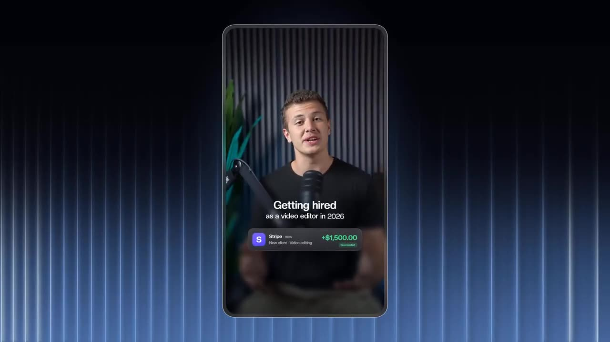
Come leggerla: ogni capitolo riporta in italiano tutto quello che Joseph dice, nell'ordine in cui lo dice. Il numero blu a sinistra è il minuto del video. In fondo a ogni capitolo, il riquadro "In pratica" dice cosa ce ne facciamo. La trascrizione originale in inglese, frase per frase con i tempi, è in trascrizioni/frasi-con-tempi.txt.
0:00 · Introduzione
Cosa promette il video
0:00
Nelle ultime tre settimane ho costruito questa skill di montaggio short-form e l'ho usata per creare gli ultimi 12 reel premium pubblicati sul mio Instagram. Uno di questi ha superato le 90.000 visualizzazioni.
0:10
Molti si chiedono se questi video sono montati con l'IA o da un montatore vero. Oggi vi faccio vedere come ho allenato Claude a montare i miei video short-form per Instagram.
0:19
Primo, scompongo le cinque chiavi che formano il mio stile di montaggio virale, così lo capite. Secondo, vi mostro il processo di allenamento: come creare una skill di montaggio short-form per qualsiasi stile, compreso il mio. Infine prendo un video grezzo e lo monto con questa skill, passo per passo, insieme a voi.
0:35
Alla fine del video saprete come allenare Claude su qualsiasi stile vi piaccia e come usarlo per montare video short-form virali come quelli che amate.
0:44
Pubblicità La skill completa è nella sua "Joseph AI editing masterclass", dentro il corso Ultimate Editors. Link sotto il video.
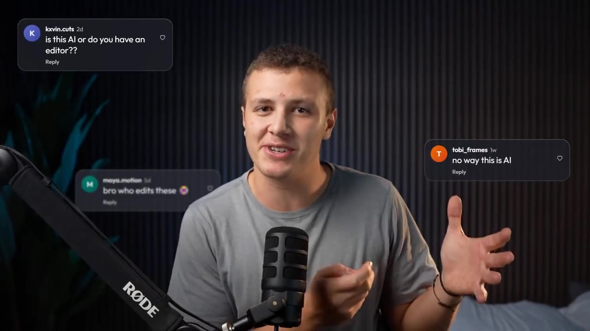
0:12 I commenti: "è IA o hai un montatore?"
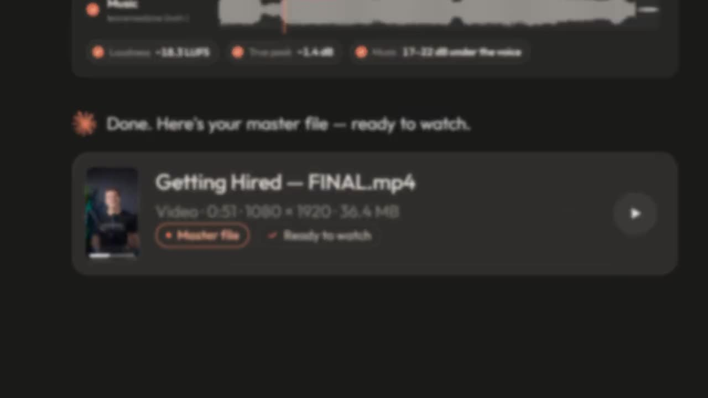
15:36 Dove si arriva: taglio, pianificazione, animazione, sound design, musica.
0:55 · Capitolo 1
Lo stile da insegnare
0:55
Prima di imparare a creare la skill, bisogna capire lo stile su cui la alleniamo.
1:02
Pubblico da parecchio tempo, e al pubblico piaceva molto lo stile dei nostri video: era pulito, premium e molto semplice. Quindi l'obiettivo della skill era semplice: insegnare a Claude a creare esattamente questi video.
1:17
Prima vediamo di cosa è fatto il mio stile. La skill è composta da cinque chiavi. Se le combini, ottieni montaggi premium come questi.
1
Le didascalie 1:28
1:28
La prima chiave sono le didascalie. Partiamo dal girato dello speaker e dividiamo la scena in terzi. Poi aggiungiamo scurimento e sfocatura al terzo inferiore, e la didascalia sta in quel riquadro.
1:38
La didascalia usa due font diversi: un sans semplice per il testo normale (Creato Display) e un font "script" speciale per il testo evidenziato (Apple Garamond).
1:47
Quando piazziamo il testo, cominciamo mettendo una o due parole in script, quelle speciali. Poi cerchiamo gli spazi intorno dove può stare il resto, e lo riempiamo con il sans.
1:56
Per l'animazione del testo è un semplice pop-up con blur e fade in: il testo salta su, sale da un'opacità bassa e all'inizio ha anche una sfocatura, come tocco in più.
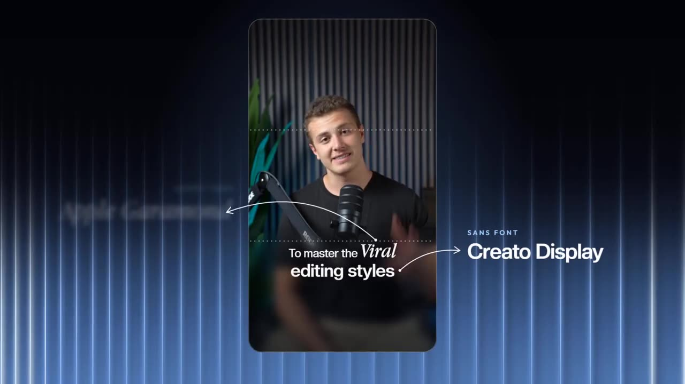
1:46 Script font per "Viral", sans font per il resto.
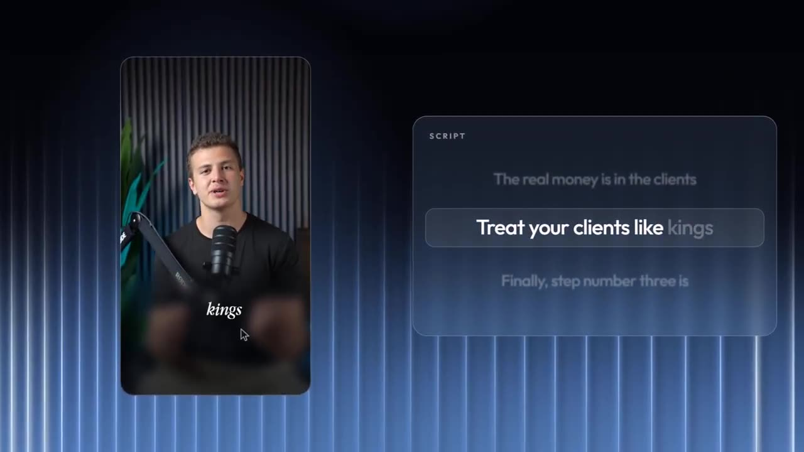
1:51 La parola in corsivo si piazza per prima.
In pratica: lo facciamo già con Inter Tight e Instrument Serif. L'unica differenza è la posizione: il suo terzo inferiore su Reels finisce sotto l'interfaccia, quindi la nostra fascia resta sopra y = 1440.
Montareelpremium inun'oraemezza
Le parole entrano una per volta in 10 frame. Nella tua versione la fascia sta sopra y = 1440.
2
I rombi dei capitoli 2:04
2:04
La seconda chiave sono i listicle in grafica UI. Molti nostri video sono a capitoli: accompagniamo lo spettatore dal capitolo uno al due e al tre. Usiamo questi elementi per mostrare i tre capitoli presto, all'inizio del video.
2:17
Il design è un rombo con un leggero gradiente e un contorno sottile all'esterno, con un numero in mezzo.
2:23
Come animazione, introduciamo ogni capitolo con un semplice pop-up fade. Poi, ogni volta che nel video nominiamo il capitolo, lo riusiamo con il testo accanto che dà il nome al capitolo.
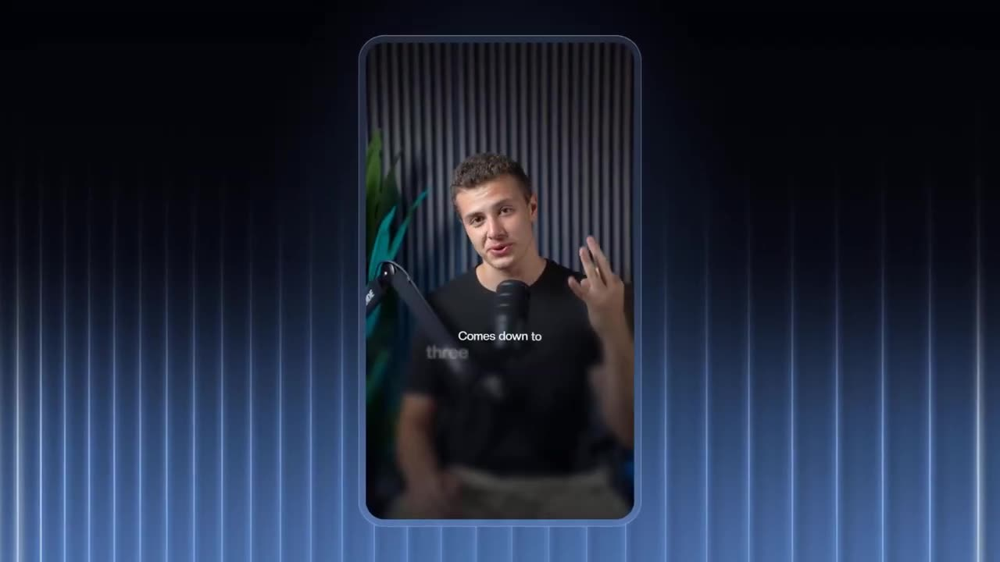
2:16 "Comes down to three simple steps" con i tre rombi.
In pratica: è una cosa nuova per noi. Funziona per ogni reel "in 3 punti". Va costruita come componente Remotion.
Bastanotrestep
1
2
3
I tre rombi entrano sfalsati di 5 frame, quando lo speaker dice "tre".
3
Pop-up UI e contatori 2:32
2:32
La terza chiave sono i pop-up UI a schermo e i contatori numerici. Ce ne sono di molti tipi e cambiano in base a cosa dice il copione.
2:39
Per esempio, quando parliamo di due elementi o confrontiamo due cose, usiamo un layout prima e dopo: oggetto a sinistra, oggetto a destra, collegati da una freccia pulita e semplice.
2:48
Quando nominiamo un software o un evento, possiamo usare un'animazione di pop-up UI come questa: sfondo sfocato, il logo del software e un testo che fa da notifica.
2:55
Se nominiamo tempi o contatori, usiamo un'animazione circolare: ha una traccia grigia di sfondo, una parte colorata in primo piano e un numero al centro che rappresenta la quantità.
3:04
E se dobbiamo elencare più cose, facciamo comparire un riquadro sfocato come questo ed elenchiamo ogni elemento in sequenza.
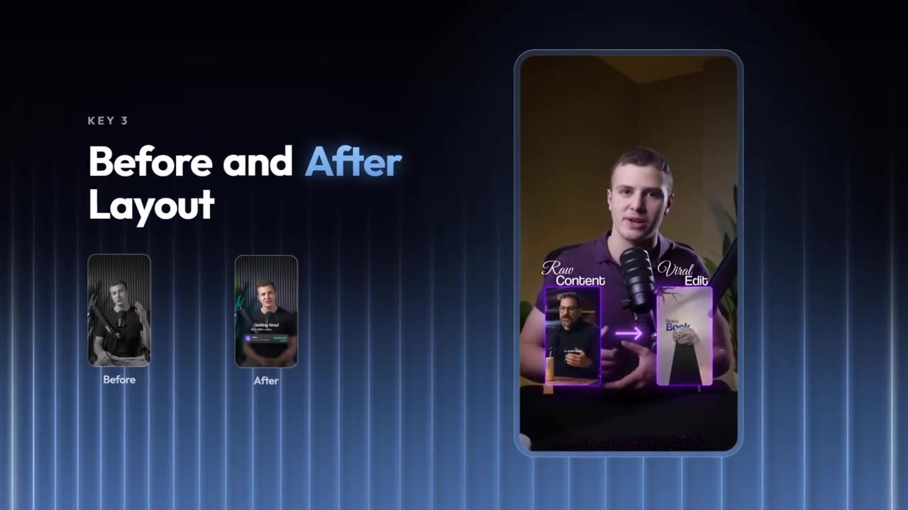
2:46 Prima e dopo.
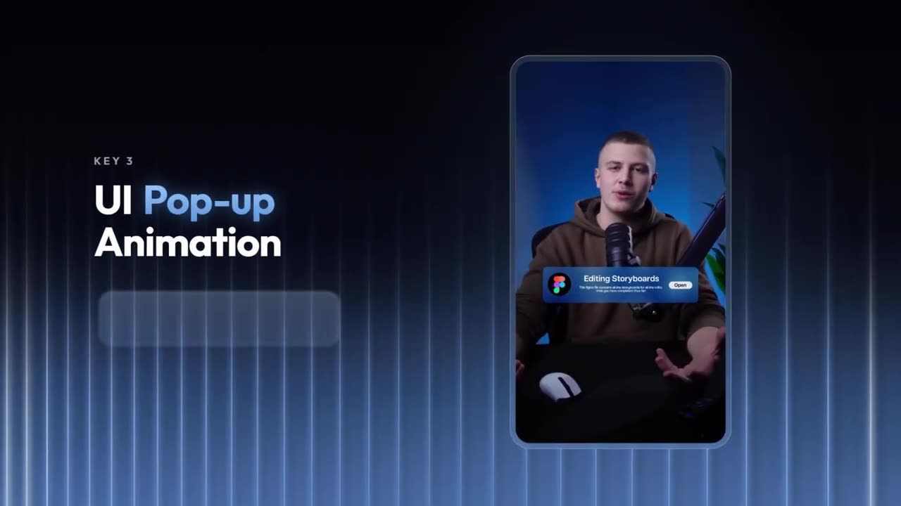
2:52 Notifica UI.
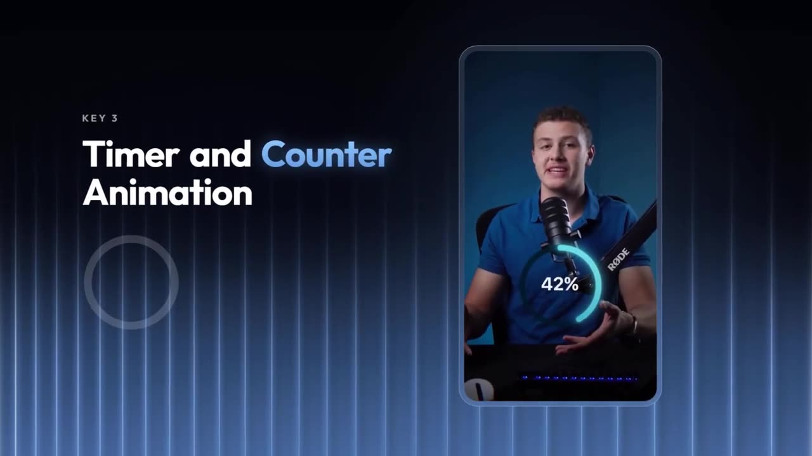
3:01 Cerchio contatore.
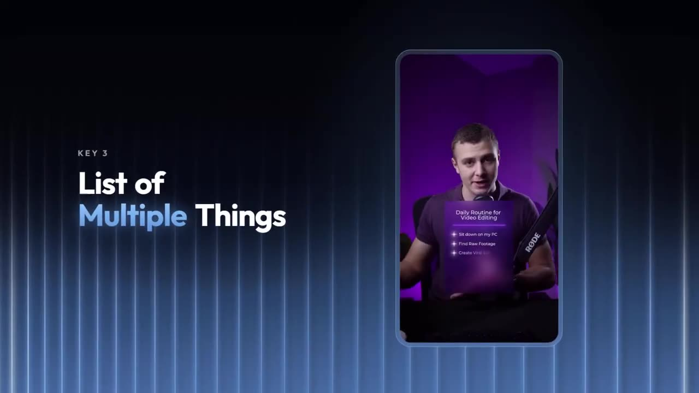
3:06 Elenco in riquadro.
In pratica: la regola utile è che la grafica la sceglie il copione. Due cose: prima e dopo. Un nome di software o un evento: notifica. Un numero: cerchio. Un elenco: riquadro.
0%
Il75%mollaprima
€
Pagamento ricevuto
Nuovo cliente · adesso
+1.500
Ilprimocliente
Grezzo
Montato
Cosa serve
Video di riferimento
Scomposizione dello stile
Un piano scena per scena
Revisione
Tocca un tipo per vederlo. L'arco sale con la curva lento-veloce-lento in 40 frame.
4
L'hook 3:10
3:10
La quarta chiave è come creiamo hook che coinvolgono. Usiamo una formula semplice in tre pezzi: speaker, testo e visual.
3:17
Prima di tutto ci assicuriamo che lo speaker si veda: allineando gli occhi al terzo superiore del video, lo spettatore vede subito lo speaker e ci si collega.
3:24
Per il testo, tutto parte dal copione e da una domanda: cosa di questo fa venire voglia di guardare il video? Quando l'hai trovato, lo metti in risalto con il testo.
3:33
Per il visual ci chiediamo: cosa possiamo mostrare a schermo che aiuti il testo ad agganciare lo spettatore? Possono comparire gli stili di montaggio di cui parliamo, o un timer se il video promette di insegnare una cosa in poco tempo.
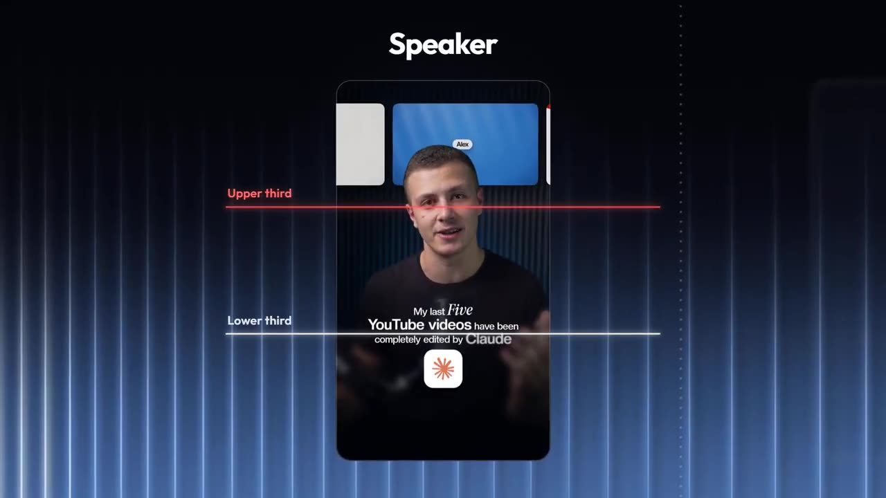
3:21 Occhi sul terzo alto.
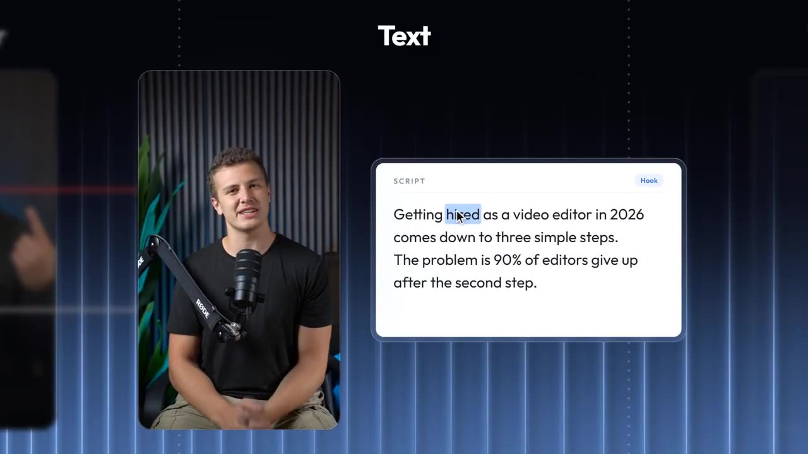
3:31 Il testo nasce dal copione.
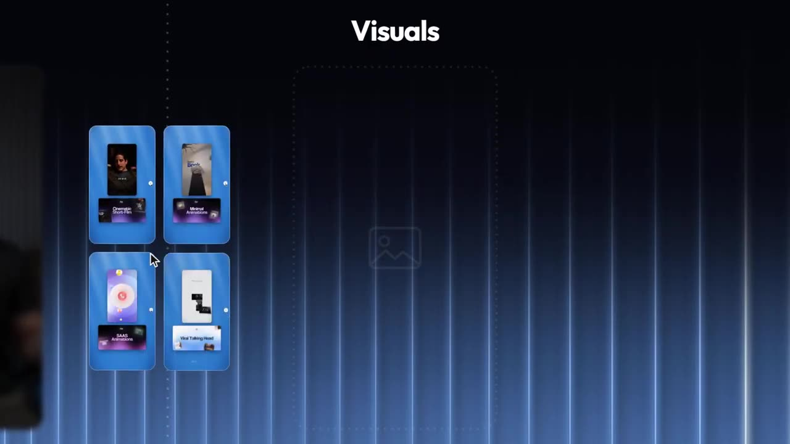
3:41 Il visual lo sostiene.
In pratica: nel piano frase per frase, la prima riga ha sempre tre caselle: dove stanno gli occhi, quale frase va a schermo, cosa la dimostra.
terzo alto: occhi
terzo basso
Trovareclienti intremosse
1
2
3
Speaker, promessa e visual compaiono tutti entro il primo mezzo secondo.
5
Le animazioni a tutto schermo 3:46
3:46
La quinta chiave sono le animazioni a tutto schermo. Sono il pane quotidiano del video: occupano metà del montaggio ma hanno il massimo impatto.
3:54
Dipendono del tutto da cosa dice il copione, ma per esempio usiamo i listicle animati per accompagnare lo spettatore da un punto all'altro. Sono fatti di una timeline, card UI dei capitoli e testi ed elementi che scorrono accanto.
4:05
Altre volte usiamo scene semplici a tutto schermo, dove un solo elemento occupa tutta la scena e mostra uno schermo o un esempio di quello che vogliamo far vedere.
4:12
Usiamo anche animazioni di testo a tutto schermo, dove sfondo e testo sono in contrasto, per aiutare lo spettatore a leggere il punto che stiamo spiegando.
4:17
Infine usiamo gli zoom fuori dallo schermo quando vogliamo portare lo spettatore fuori dal girato dello speaker e introdurre elementi nuovi, come altri montaggi o altri esempi.
4:24
Tutte e cinque le chiavi insieme formano lo stile che conoscete dal mio Instagram.
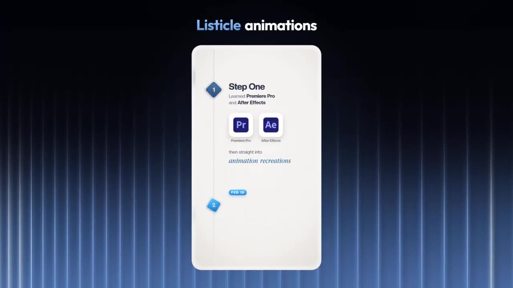
4:01 Listicle con timeline.
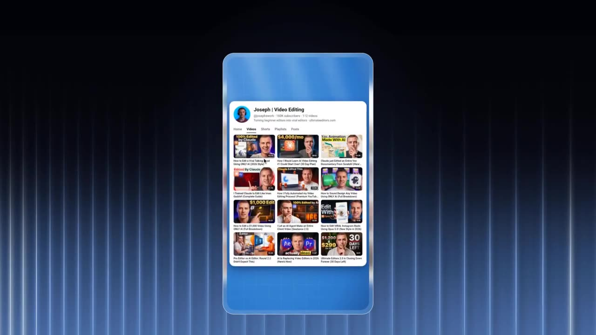
4:06 Scena singola.
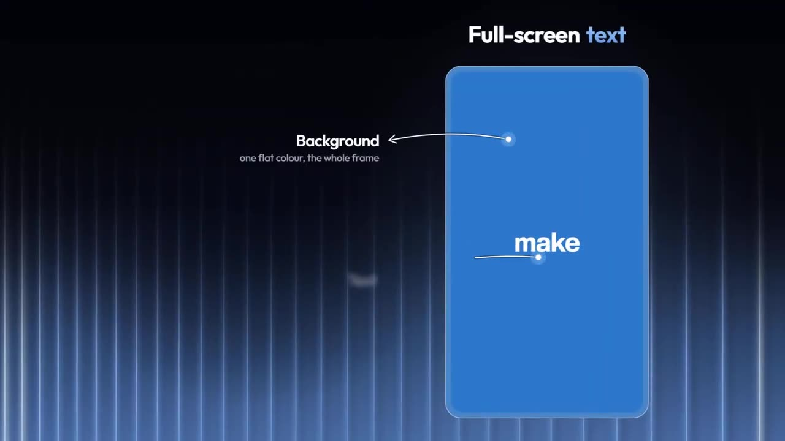
4:16 Testo pieno: fondo e testo opposti.
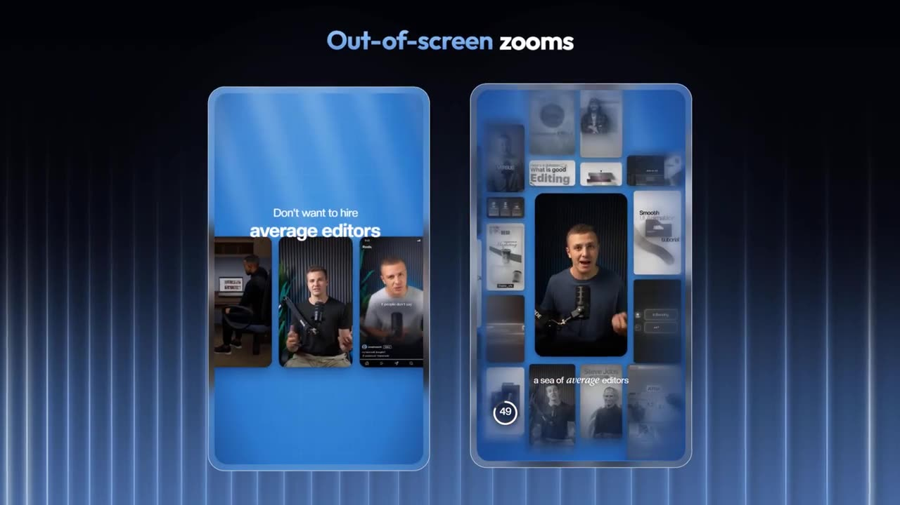
4:21 Zoom fuori dallo schermo.
In pratica: somigliano ai nostri insert su fondo bianco con la card del soggetto. La novità è la quantità: per lui sono metà del video.
Iclientichetiamano
Lo zoom dura 1,5 s (45 frame) con la curva unica, come nel suo regolamento.
4:30
Pubblicità "Avete cliccato per imparare a montare video premium con l'IA, ma se vi dicessi che ho costruito un pacchetto completo di skill che lo fa?" Presenta la sua skill short-form e una skill per i video lunghi di YouTube, con i corsi che spiegano come le ha allenate. Sono nella "Joseph AI editing masterclass", una delle 12 masterclass di Ultimate Editors 2.0, insieme a cinque stili di montaggio virali e un corso base sul montaggio con l'IA. Il corso chiude il 15 novembre, con uno sconto prima della chiusura.
5:25 · Capitolo 2
Come si allena Claude su uno stile
5:25
Ora che conoscete le cinque chiavi, vediamo come allenare Claude su questo stile. Potreste pensare che sia difficile con uno stile così complesso. La verità è che, per allenare Claude su qualsiasi stile, servono solo due cose semplici.
5:38
La prima è una grande cartella di riferimento, con tutti i video che vogliamo replicare. Come la raccolgo? Vado sul mio profilo, guardo i montaggi e scelgo quelli che mi piacciono di più. Alla fine ne ho scaricati 14. Li metto in una cartella di riferimento, e la prima parte è fatta.
5:55
La seconda è una scomposizione completa dello stile. È la parte che fa davvero la differenza.
6:00
Si apre un programma come Figma e si divide lo schermo in due: Figma a destra, i video di riferimento a sinistra, da guardare uno per uno. Ogni volta che vediamo una scena di design buono, facciamo uno screenshot e lo mettiamo sulla tavola. Lo facciamo per le scene di testo, le animazioni a schermo, quelle a tutto schermo e tutto ciò che sembra di qualità. Alla fine abbiamo una grande tavola di ispirazione con più di 120 immagini.
6:24
È molto importante, perché abbiamo appena trasformato i video che vogliamo creare in immagini che si possono vedere sullo schermo.
6:29
Il passo successivo è scomporre lo stile. Ricordate le cinque chiavi? Ora le scomponiamo una per una usando la tavola. Si parte dalla chiave uno: si raccolgono tutte le ispirazioni sul design dei testi e si mettono insieme. Poi se ne prende una, la si mette di lato e si scompone di cosa è fatta: i font, la posizione e tutto il resto.
6:47
Lo facciamo per ogni chiave. Trascino le ispirazioni dei listicle e le scompongo così. Poi le animazioni a schermo, che scompongo in una tabella con ogni design e ogni tipo di animazione. Poi c'è la parte sulla chiave 4, come si costruisce l'hook: personaggio, testo e visual. Infine prendo le ispirazioni delle animazioni a tutto schermo, le divido in tabelle e ne scompongo design e animazioni.
7:09
Se ora facciamo zoom indietro, questa tavola ha 120 immagini di com'è il nostro stile e ne scompone ogni elemento e come si fa da zero: i design, le animazioni e anche i riferimenti.
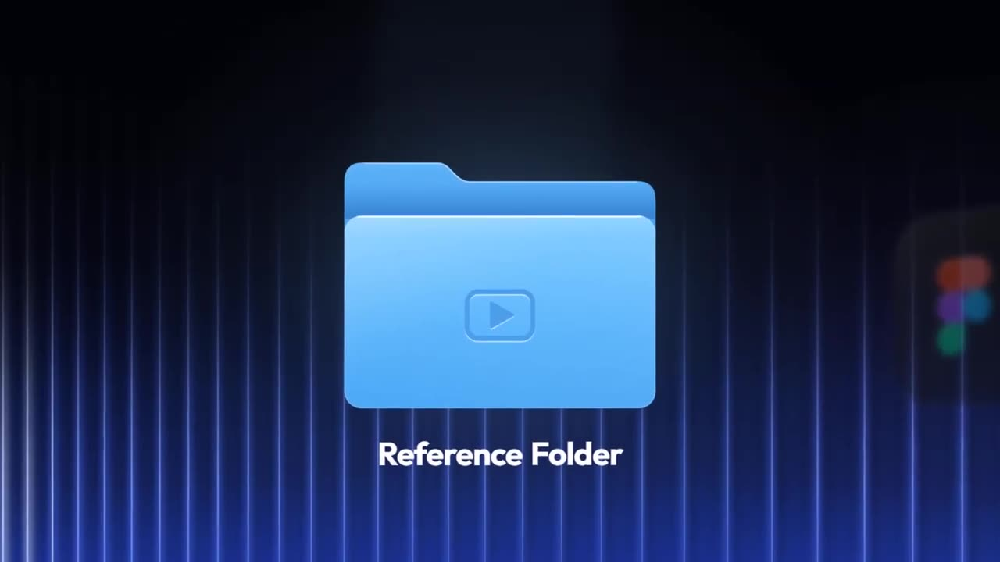
5:41 La cartella di riferimento.
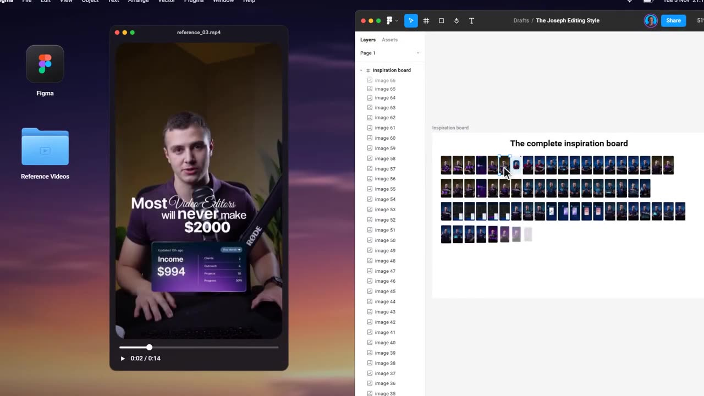
6:21 La tavola di ispirazione.
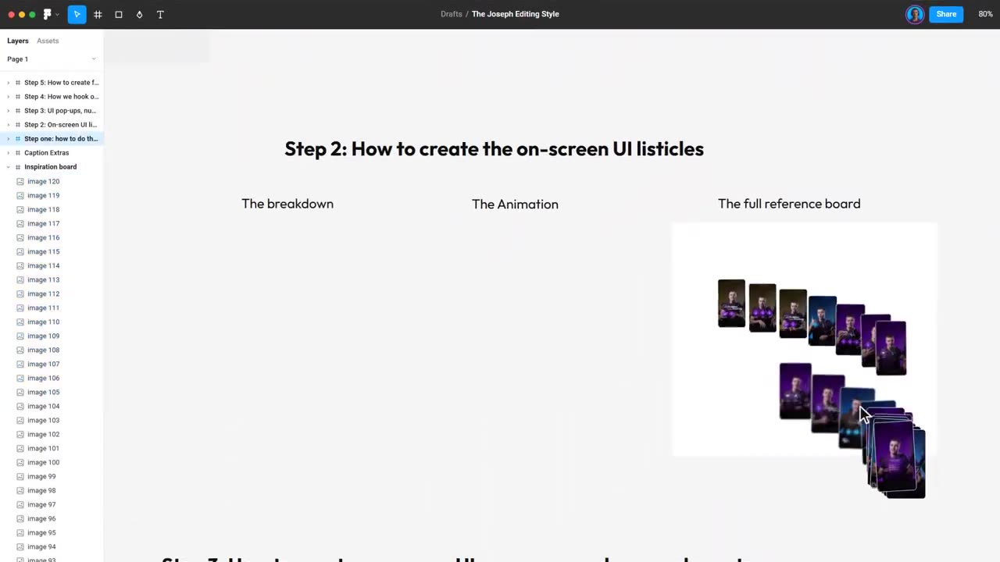
6:51 Scomposizione, animazione, riferimenti.
Il prompt 7:19
7:19
Ora che abbiamo la cartella e la tavola completa, come creiamo la skill? Qui si fa interessante. Andiamo in Claude e carichiamo i 14 video di riferimento e la scomposizione di Figma. Poi scriviamo questo:
Per prima cosa scomponi i 14 video di riferimento in una trascrizione parola per parola e un'analisi fotogramma per fotogramma. Poi studia tre cose principali:
1. i principi di design di ogni scena: colori, layout, effetti e tutto il resto;
2. la logica delle animazioni: che animazione ha ogni elemento, un pop-up fade in, un blur reveal e così via;
3. la posizione delle animazioni e il loro tempo rispetto al copione del video.
Poi usa le scomposizioni di Figma come analisi approfondita dei principi di design di questo stile. Studiale e analizza come è fatto lo stile. Impara tutto quello che c'è da sapere su questo stile, così da poterlo ricreare, e trasforma tutto in una skill.
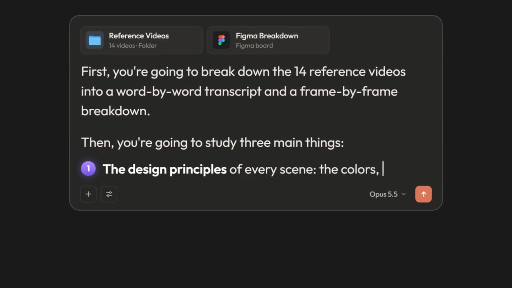
7:41 Il prompt originale, in inglese.
Cosa fa Claude e cosa produce
8:03
Claude prende i 14 video e li scompone in tutti i fotogrammi che formano le animazioni, più una trascrizione parola per parola di ogni video. Poi guarda il file Figma e lo studia dall'inizio alla fine: ogni design, come è fatto, come è animato. Ne ricava le regole dello stile e mette tutto insieme nel pacchetto della skill.
8:23
Dentro il pacchetto, per prima cosa c'è un regolamento (rule book). Stabilisce tutti i dettagli: dimensioni dei font, spaziature, layout dei design, curve di animazione e velocità dei movimenti.
8:33
Poi crea un lookbook, un libro che mostra com'è fatto il mio stile: forme, colori, gradienti, stile delle icone, asset usati e tutto il resto.
8:41
Infine crea una cartella di riferimento, dove salva ogni singola animazione dei 14 video in una cartella. In ognuna c'è uno screenshot del design, un foglio dei fotogrammi chiave dell'animazione e una scheda che spiega come funziona. Lo fa per quasi 200 animazioni.
8:57
Tutto questo insieme forma la skill short-form che crea questi montaggi.
8:31 Si leggono le regole: testo ≈ 48 px, grassetto 66-73 px; interlinea stretta; i blocchi principali al centro vero; ogni movimento lento-veloce-lento, ~1,5 s, bezier(0.7, 0, 0.3, 1) in 45 frame; niente di veloce o rigido.
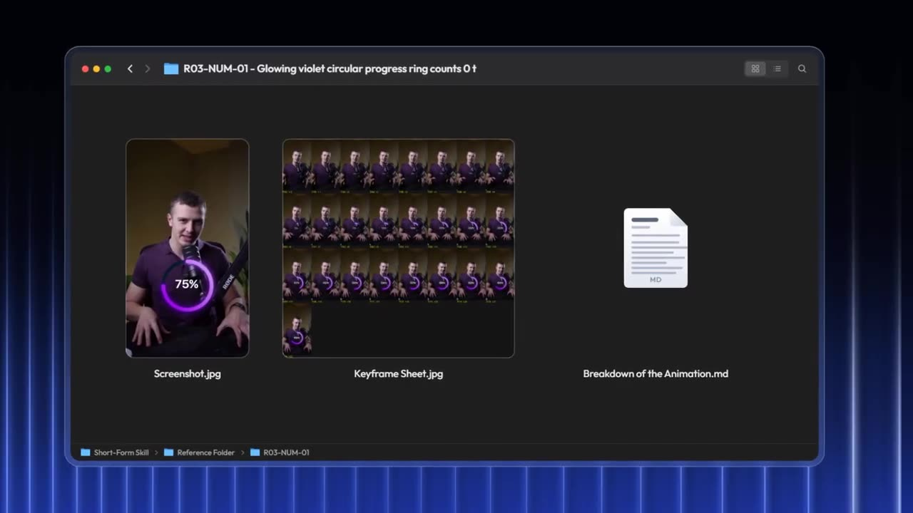
8:51 Un riferimento: R03-NUM-01, cerchio viola che conta.
In pratica: è esattamente la struttura che ho dato alla tua nuova skill skill/reel-premium-ui/. Nelle schermate si vede anche l'indice del regolamento: le tre domande, movimento, didascalie, capitoli, scene a tutto schermo, ricostruzioni UI, numeri e soldi, asset, suono, musica, consegna.
9:03
Pubblicità Ripete che le due skill e i corsi sono nella masterclass. Dice che i suoi studenti partono da principianti e imparano in pochi mesi, che il corso ha fatto guadagnare ai montatori 282.000 $ in 9 mesi grazie al "blueprint da 2.000 $ al mese" (costruire un personal brand e trovare clienti), e che il prezzo scende da 1.200 $ l'anno a 299 $ a vita fino al 15 novembre.
10:16 · Capitolo 3
Il montaggio dal vivo
10:16
Ora Claude conosce tutto del nostro stile e lo sa ricreare da zero. Vediamo come si usa la skill.
10:26
Questo è il video grezzo che monterò. Apro Claude, entro in Claude Code, imposto il modello più potente e lo sforzo su "extra". Chiedo a Claude di caricare la mia skill short-form, per montare un video nel mio stile.
10:40
Taglio grezzo. La prima cosa è trasformare il girato, con silenzi e prese sbagliate, in un taglio pronto da montare. Carico il video e chiedo una trascrizione parola per parola, di trovare tutti i silenzi e le prese sbagliate e di toglierli con tagli netti. Premo invio.
10:56
Claude trascrive il video parola per parola, analizza la trascrizione, cerca silenzi, prese sbagliate o qualunque cosa vada tolta, la toglie e restituisce il taglio grezzo.
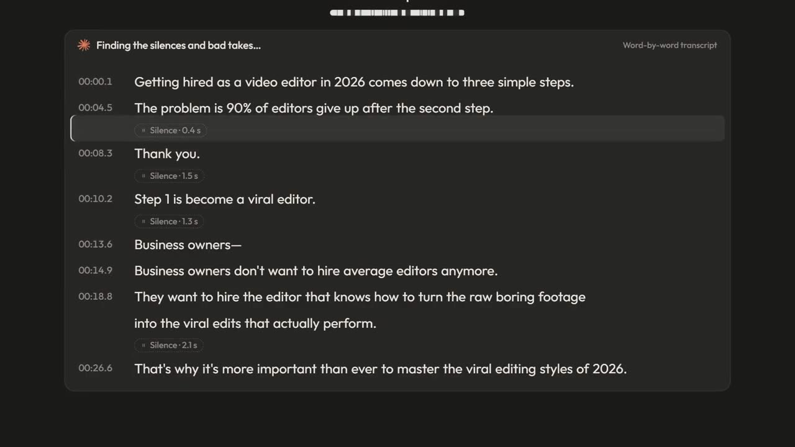
11:01 Silenzi e prese segnati nella trascrizione: da 1:20 a 0:51.
In pratica: lo facciamo già con trascrivi_parole.py e proponi_tagli.py.
Il documento di pianificazione
11:08
Ora che abbiamo il taglio, bisogna pianificare il montaggio. Non vogliamo assolutamente che sia l'IA a decidere cosa mostrare: verrebbero fuori montaggi da IA, brutti e scadenti.
11:20
Il vero segreto per avere buoni risultati è pianificare il montaggio da soli e far fare il lavoro all'IA.
11:25
Chiedo a Claude di usare la trascrizione per creare un documento di pianificazione: a destra ogni riga del copione, a sinistra una casella vuota dove scrivo cosa voglio.
11:37
Si può anche chiedere: "In base allo studio che hai fatto sui miei contenuti short-form, consigliami 4 design possibili per ogni scena tra cui scegliere." Avendo studiato i miei video, Claude sa che animazioni uso e può consigliare scene adatte a quello che dico.
11:49
Claude ci mette qualche minuto e manda il documento. Lo apri e vedi le scene a destra e il piano a sinistra. Questo è il vero trucco.
12:01
Qui passo circa 15 minuti a ragionare dal punto di vista dello spettatore e a pianificare il montaggio di conseguenza. Vi faccio vedere come l'ho fatto per questo video:
Tempo
Frase del copione
Cosa pianifica e perché
12:08
"Trovare lavoro come video editor nel 2026 si riduce a tre semplici step."
L'hook parla di guadagnare come montatore, quindi: notifica di pagamento Stripe che mostra un montatore che incassa. Poi i tre rombi dei capitoli quando dice "tre step".
12:29
"Il problema è che il 90% dei montatori molla dopo il secondo step."
Rompe un po' lo schema, quindi: Claude traccia il viso tenendo la punta del naso al centro, desatura l'immagine e aggiunge una vignetta.
12:41
"Step uno: diventa un montatore virale."
Il rombo del capitolo uno con il testo che descrive il capitolo.
12:50
"I titolari non vogliono più assumere montatori medi. Vogliono quello che sa trasformare il girato noioso in edit virali che funzionano. Per questo oggi è più importante che mai padroneggiare gli stili virali del 2026."
Zoom fuori dallo schermo che scorre su montaggi di bassa qualità. Poi una panoramica dai video grezzi fino alla vetrina degli edit finiti. "Fa arrivare il punto e aiuta lo spettatore a capire esattamente cosa dico."
13:19
Continuo così per tutto il documento, scegliendo i design e scrivendo le animazioni che voglio, sempre dal punto di vista dello spettatore, fino ad avere il piano completo, esattamente come voglio che venga.
13:29
Ripeto: questo passaggio è fondamentale perché l'obiettivo non è far inventare il montaggio all'IA, ma guidarla a costruire il montaggio che abbiamo in testa.
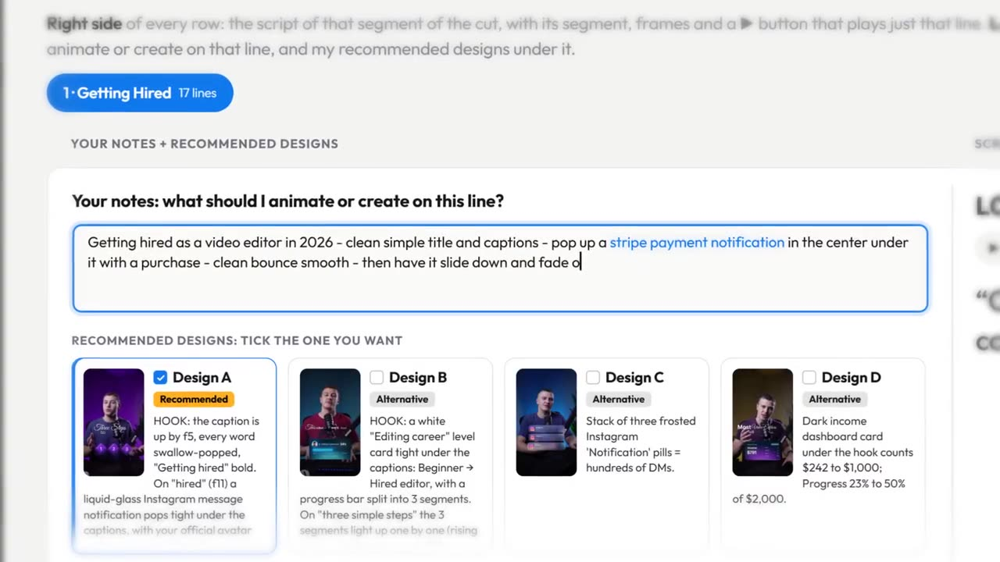
12:22 "Cosa animo su questa riga?" e i 4 design: A consigliato, B, C, D.
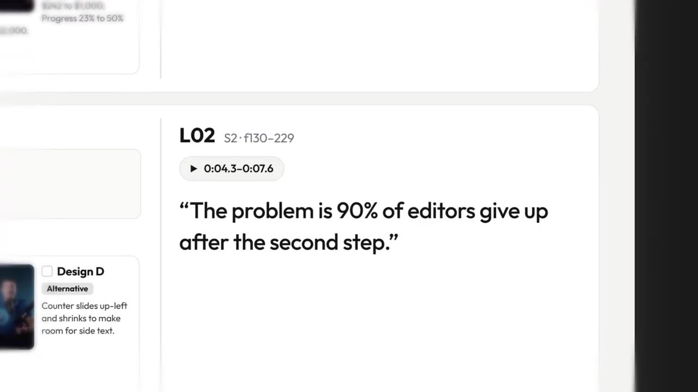
12:35 "Primo piano: traccia il viso mentre parlo."
In pratica: il nostro piano frase per frase diventa così. Per ogni frase propongo 4 design presi dai riferimenti, e tu scegli o scrivi il tuo.
Costruzione e revisione
13:36
Fatto il piano, lo diamo a Claude e chiediamo di creare il montaggio usando il piano come guida a cosa creare e la skill come guida a come deve apparire.
13:46
Qui sta la magia. Claude guarda il piano: "ok, qui l'utente vuole questo". Poi guarda la skill: "ok, ecco come lo stile mostra questo tipo di animazione". Con questa logica costruisce le animazioni in Remotion, per ogni scena pianificata: legge il piano, decide come costruirla con la skill, raccoglie gli asset e la costruisce.
14:07
È il passaggio più lungo: dopo circa 40 minuti il video completo è pronto da guardare.
14:14
Quando arriva la prima bozza, non esaltatevi troppo. Probabilmente vi lascerà a bocca aperta, ma va rivista almeno una o due volte prima che sia davvero buona. L'ho guardata tutta: era bellissima, ma molte cose potevano migliorare. Ho chiesto a Claude di:
velocizzare l'animazione della notifica Stripe che scende;
ingrandire il rombo del capitolo 3;
togliere alcune animazioni dalla scena col viso tracciato;
mostrare un edit virale in una scena;
ammorbidire uno zoom out;
rifare un design: la camera scatta sul personal brand a sinistra e su un edit a destra;
ridurre le icone degli utenti in una scena;
rifare i grafici con una griglia "blueprint" sullo sfondo;
trasformare una scena in testo su una riga sola, perché Claude aveva sbagliato a costruirla.
14:54
Questo passaggio è molto più veloce, perché Claude ha già il progetto: in circa 10 minuti fa tutte le modifiche e manda il montaggio finale. Lo guardi e confermi che va bene. "E poi dite a Claude che ha fatto un ottimo lavoro, così se un giorno l'IA diventa cosciente non viene a vendicarsi."
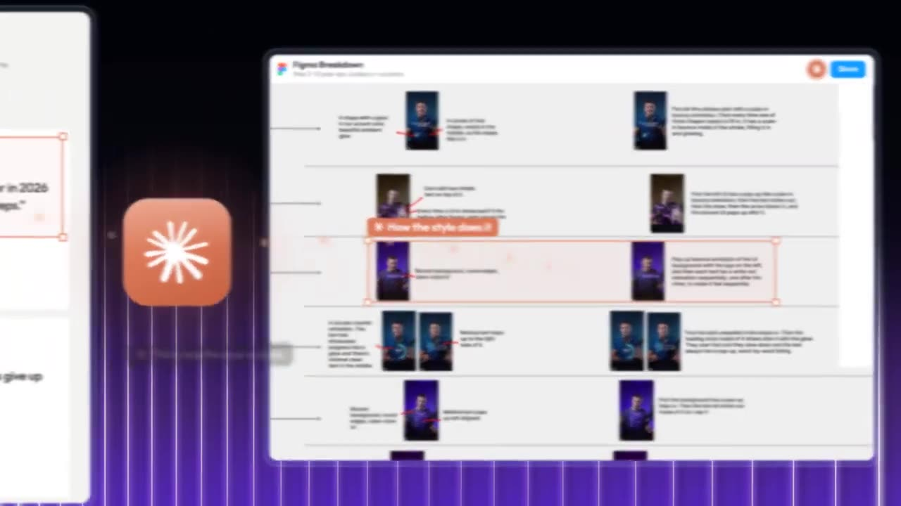
13:56 Piano + skill = montaggio.
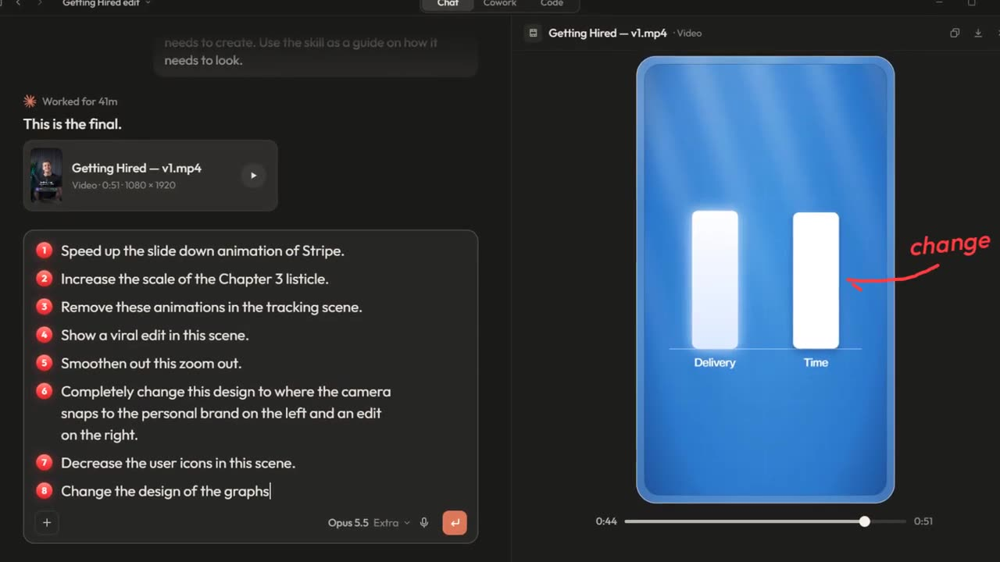
14:46 Le correzioni scritte accanto all'anteprima.
In pratica: funziona come le tue revisioni. La differenza utile è mandare tutte le correzioni in un messaggio solo, numerate. Io rispondo con la lista spuntata.
Suono e musica
15:12
Con il video finale pronto, basta chiedere a Claude di fare il sound design e la musica. Claude crea prima una scheda dei suoni completa (cue sheet), che mostra ogni animazione, tutto ciò che succede a schermo, esattamente quando succede e quale effetto usare.
15:27
Poi aggiunge gli effetti, ricontrolla i volumi e chiude con la musica. Quando ti manda il master, il video è finito e pronto da guardare.
15:36
A questo punto hai caricato il video, Claude ha fatto i tagli, tu hai pianificato, lui ha animato, ha fatto il sound design, ha messo la musica e ti ha mandato il video finale. Mi ci è voluta circa un'ora e mezza.
Tempo
A schermo
Effetto
Livello
0:00.0
Didascalia hook "Getting"
Pop sordo
−6 dB
0:00.6
Arriva la notifica Stripe
Notifica UI
−9 dB
0:01.0
Compare 1.500 $
Cassa, kaching
−6 dB
0:09.8
Parte lo zoom out
Whoosh lungo, attacco rapido
−9 dB
0:14.2
Il pan arriva sul video grezzo
Vento forte
−10 dB
Dalle schermate: 164 effetti in 51 secondi, tutti abbassati di altri 2 dB. Musica strumentale con il drop sullo step 1 a 0:07.7, 17-22 dB sotto la voce. Mix finale −18,3 LUFS, picco −1,4 dB.
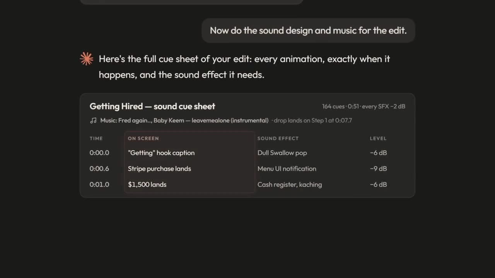
15:22 La scheda dei suoni.
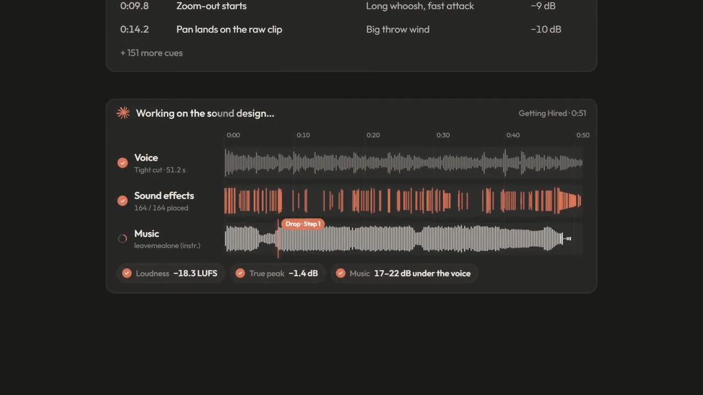
15:31 Voce, effetti, musica e misure.
In pratica: la scheda dei suoni prima del mix la facciamo sempre. Il volume finale resta il nostro: −14 LUFS.
Il reel finale
Da 15:48 mostra il reel montato con Claude, 51 secondi. Ecco tutto il testo:
0:00
"Trovare lavoro come video editor nel 2026 si riduce a tre semplici step. Il problema è che il 90% dei montatori molla dopo il secondo."
0:08
"Step uno: diventa un montatore virale. I titolari non vogliono più assumere montatori medi. Vogliono quello che sa trasformare il girato grezzo e noioso in edit virali che funzionano. Per questo oggi è più importante che mai padroneggiare gli stili virali del 2026."
0:23
"Step due: costruisci il tuo brand. Russell Brunson ha detto: non puoi costruire qualcosa di straordinario e aspettarti che la gente lo trovi. Devi promuovere le tue capacità. Per farlo devi costruire una pagina social e pubblicare i tuoi lavori migliori, per attirare i clienti migliori."
0:37
"Step tre: tratta i clienti come re. I soldi veri sono nei clienti che non vogliono più andarsene. Consegna più del dovuto e prima delle scadenze, e fai di tutto perché i tuoi clienti ti adorino. Se fai solo queste tre cose, non dovrai mai più cercare clienti."
0:02 L'hook.
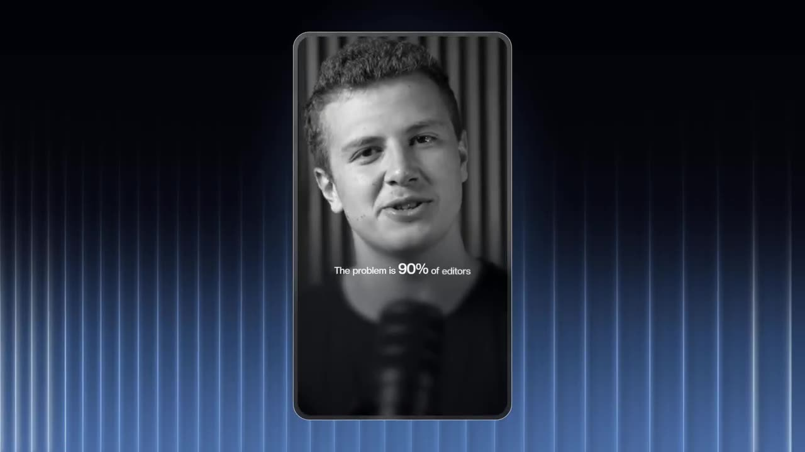
0:06 "Il 90% molla": viso tracciato, bianco e nero.
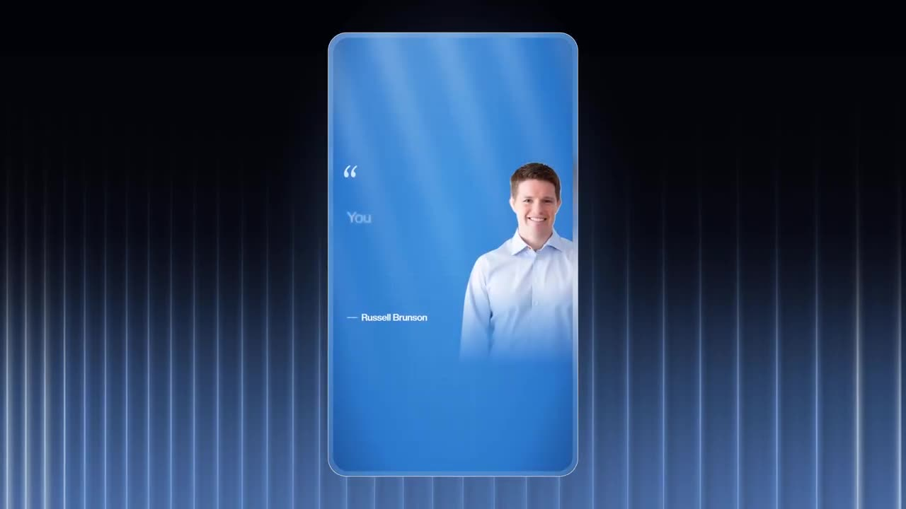
0:26 Citazione su card blu.
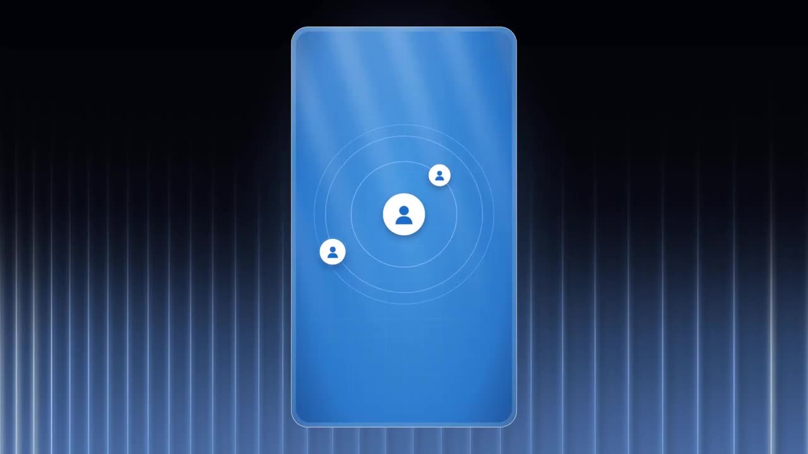
0:41 Clienti intorno: scena singola.
L'IA ruberà il lavoro?
16:41
Dopo aver visto un montaggio fatto con l'IA, potreste temere che il montaggio stia morendo o che l'IA stia per prendersi tutti i lavori.
16:48
La verità è che il montaggio di oggi non sarebbe venuto così bene senza i miei 8 anni di esperienza. Devi comunque capire come si fa un buon video per guidare l'IA a farne di buoni per te.
16:58
Per un montatore servono due capacità. La prima è la psicologia del contenuto: sapere cosa va messo dove in un video perché funzioni. La seconda è saperlo far eseguire all'IA.
17:08
Se avete paura che l'IA prenda il sopravvento, probabilmente non sapete creare video belli e non sapete come farlo con l'IA.
17:15
Pubblicità Chiusura sul corso: fondamenti di design e di animazione, psicologia dei contenuti short-form, le cinque masterclass sugli stili, il corso base sugli strumenti IA (Claude, Remotion, Higgsfield), la masterclass con le sue skill e il gruppo sul personal brand. 299 $ a vita invece di 1.200 $ l'anno, fino al 15 novembre.
Il messaggio di tutto il video, in una frase: Claude esegue, ma il montaggio lo decide chi conosce il mestiere. Un piano scritto da te e una skill che conosce lo stile danno un reel professionale. Lasciare scegliere all'IA dà grafiche a caso.
Dopo il video
Cosa ne ricaviamo: confronto col tuo stile
Molte cose le facciamo già nella scheda G. Dove il suo stile e le tue regole si scontrano, vincono le tue regole.
Tema
Joseph
Tu (scheda G)
Cosa facciamo
Piano prima di montare
Documento con 4 design per frase
Piano frase per frase + storyboard
Nuovo: aggiungiamo i 4 design proposti per frase
Due font
Creato Display + Apple Garamond
Inter Tight + Instrument Serif
Già fatto: teniamo i tuoi
Testi parola per parola
Pop + fade + blur
Pop in 4 frame, parola chiave a fuoco in 7
Già fatto
Posizione delle didascalie
Terzo inferiore
Niente testi sotto y = 1440
Conflitto: la fascia sale sopra y = 1440
Grafiche UI
Prima/dopo, notifica, contatore, elenco
Schemi con spunte, pillola "richiesta inviata"
Nuovo: 4 tipi scelti dal copione
Capitoli
Rombi numerati
Non c'erano
Nuovo
Curva di animazione
bezier(0.7,0,0.3,1), 45 frame
Durate brevi, rimbalzi leggeri
Nuovo per la scheda H
Scheda dei suoni
Tabella prima del mix
Effetti per tipo di evento
Nuovo: la scheda si fa sempre
Volume finale
−18,3 LUFS
−14 LUFS, picco −1,5
Conflitto: restiamo a −14
Revisione
Lista di correzioni numerate
Correzioni che diventano regole
Già fatto: ora finiscono nel regolamento
La skill che ho creato
Ho applicato il suo metodo a questo video: ne ho ricavato regolamento, lookbook e una prima cartella di riferimento con 10 animazioni, ognuna con screenshot, foglio dei fotogrammi chiave e scheda. Ho anche scritto una seconda skill con la procedura per allenarmi su qualsiasi altro stile che mi mandi.
skill/
├── reel-premium-ui/ stile "premium con grafiche UI" (scheda H)
│ ├── SKILL.md quando si usa, le 5 chiavi, il flusso in 7 passi
│ ├── regolamento.md font, interlinea, curve, durate, livelli audio
│ ├── lookbook.md colori, sfondi, rombi, vetro, font, icone
│ └── riferimenti/
│ ├── R01-CAP-didascalia/ screenshot · fotogrammi-chiave · scheda
│ ├── R02-LIST-rombi-capitoli/
│ ├── R03-NUM-contatore-cerchio/
│ ├── … 10 in tutto
│ └── R10-TL-timeline-capitoli/
└── allena-stile-montaggio/
└── SKILL.md come creare una skill da 10-15 video di riferimento
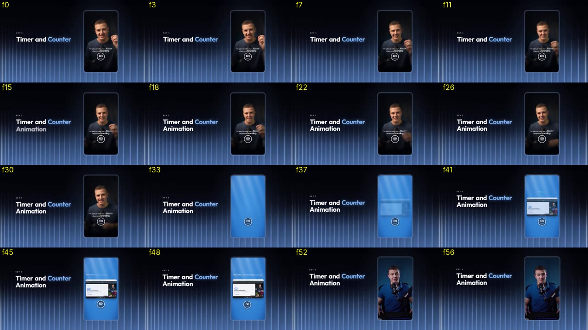
Un foglio dei fotogrammi chiave della cartella di riferimento: 2 secondi a 8 fotogrammi al secondo, con il numero di frame.
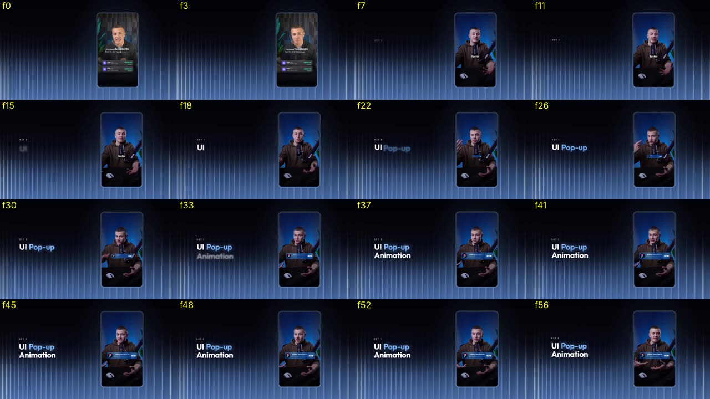
Si vede come entrano i titoli: una parola alla volta, sfocata, ogni 12-15 frame.
Per usarla davvero mancano due cose
I componenti Remotion della scheda H (rombo, contatore, notifica, prima e dopo, elenco, zoom fuori schermo) e una cartella di riferimento costruita sui reel che piacciono a te, non solo su questo video. Mandami 10-15 reel di riferimento e li scompongo con la seconda skill.